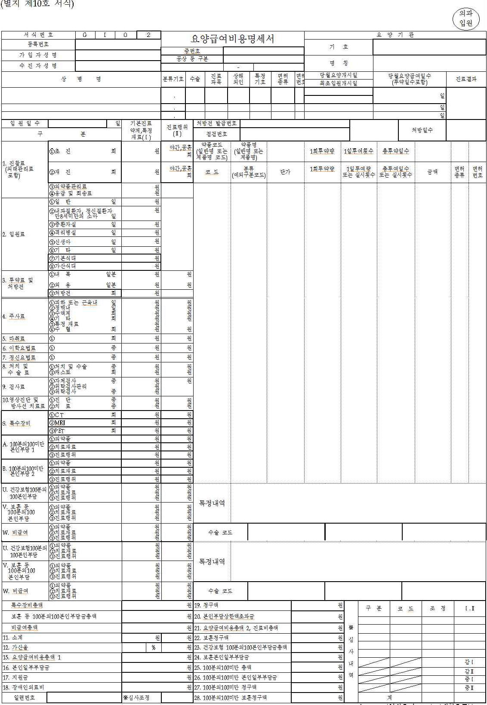
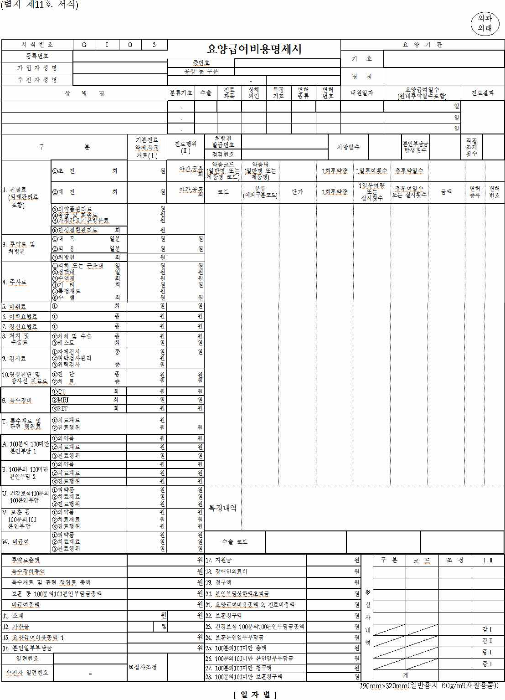
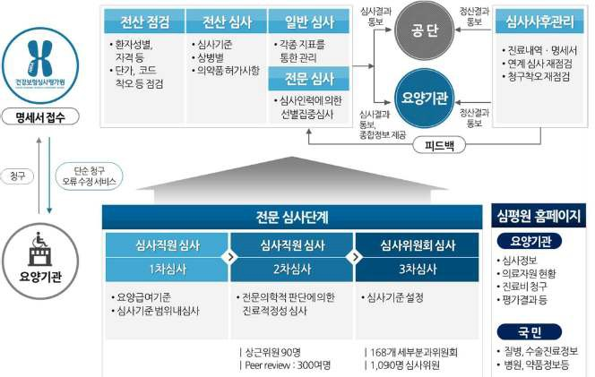
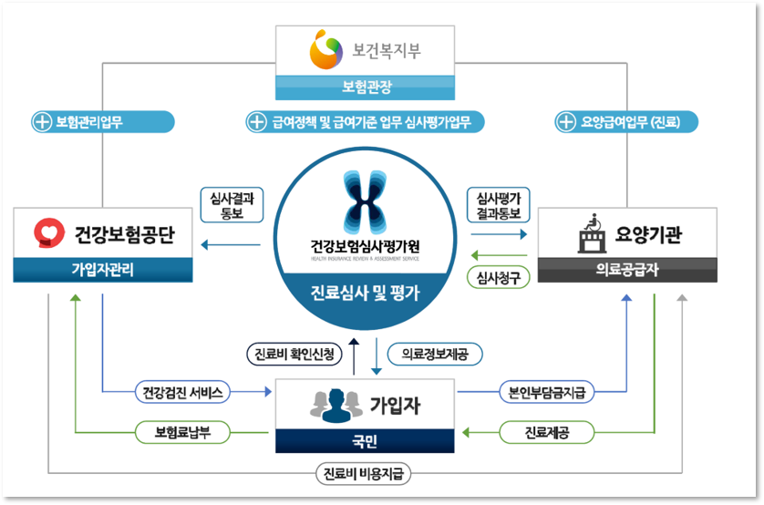
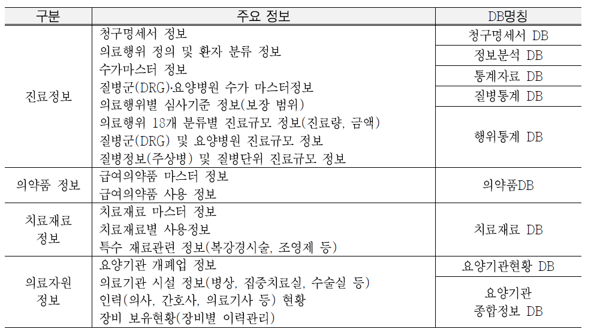
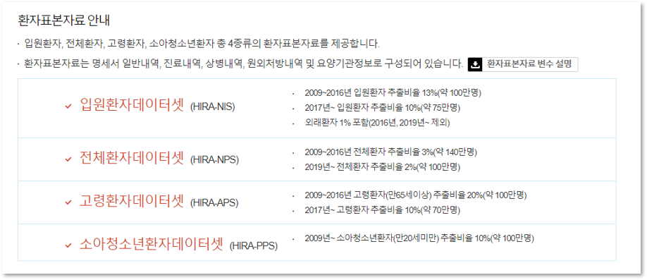
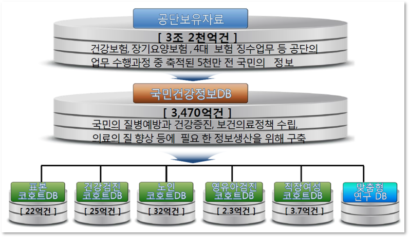
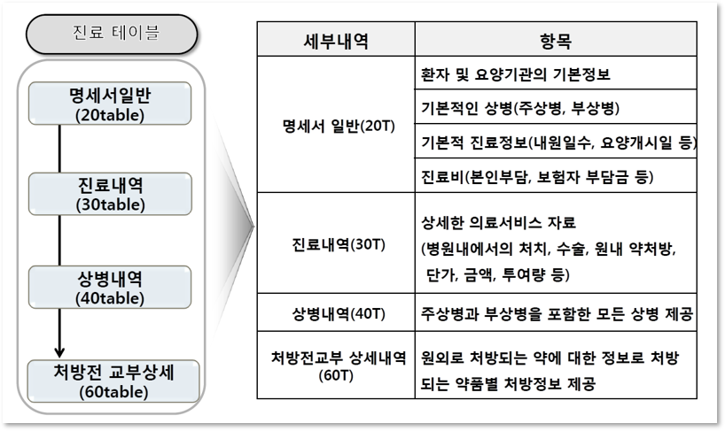

Chapter 1 건강보험 청구자료의 이해
1.1 건강보험제도
건강보험은 국가에서 관장하는 전 국민이 통합된 국가 단일보험이며, 의료 공급자의 건강보험에 대한 진료나 보험 적용을 의무화하고 있다. 또한 민간이 투자 해서 공공의 통제를 받는 민간중심 공급 구조를 갖고 있다.
건강보험 대상자
건강보험 적용 대상자는 국내에 거주하는 국민으로 가입자 및 피부양자를 포함하며, 단 의료급여법에 따라 의료급여를 받는 사람 및 독립유공자 예우에 관한 법률 및 국가유공자 등 예우 및 지원에 관한 법률에 따라 의료보호를 받는 사람들은 제외한다. 단 유공자 중 건강보험의 적용을 희망하는 경우 건강보험 적용대상자가 될 수 있다.
건강보험제도
한국의 건강보험제도에는 3개의 조직이 있다. 보건복지부는 건강보험 관련법을 제정하고 제도운영을 관리감독하며, 건강보험제도 운영은 국민건강보험공단과 건강보험심사평가원(이하 심사평가원)이 정부로부터 위탁 받아 운영하고 있다.
2000년 국민 건강보험법 시행으로 의료보험의 관리운영체계를 통합하게 되었고 같은 해 국민건강 보험공단과 건강보험심사평가원이 출범하게 되었으며, 국민건강보험공단은 보험가입자 자격관리, 보험료 징수, 진료비 지급의 업무를 담당하고 있다.
건강보험심사평가원은 국민건강보험법 제62조에 의해 요양급여비용을 심사하고 요양급여의 적정성을 평가하기 위한 기관으로, 진료비 심사, 의료 질 평가, 진료기준 설정·관리 업무를 수행하고 있다. 요양급여비용을 청구하려는 요양기관은 심사평가원에 요양급여비용의 심사청구를 하며, 심사평가원은 요양급여의 적정성을 평가하여 공단에 통보하고, 심사 내용을 통보받은 공단은 그 내용에 따라 요양급여비용을 요양기관에 지급한다.
여기서 요양급여(보험급여)란 건강보험을 통해 지급되는 가장 기본적인 급여로 건강보험 가입자 및 피부양자가 요양기관(의료기관으로 의원·병원 등)을 이용하면서 받게 되는 보험 혜택을 말한다. 건강보험의 가입자 및 피부양자는 질병·부상·출산 등에 대하여 진찰·검사, 약제·치료재료의 지급, 처치·수술·그 밖의 치료, 예방·재활 및 입원 등에 대해 요양급여를 받을 수 있다. 요양급여비용은 가입자 및 피부양자의 질병·부상·출산 등에 대하여 요양기관으로부터 진찰·검사, 약제·치료재료의 지급, 처치·수술 기타의 치료, 예방·재활, 입원, 간호, 이송 등 의료서비스를 제공받는데 발생되는 금액을 말한다.
심사평가원에서 요양급여 등의 적정성 평가는 의약학적 측면과 비용 효과적 측면에서 요양급여를 적정하게 하였는지를 평가하고 있으며, 요양기관별·진료과목별 또는 상병별로 구분하여 평가하고 있다.
수가제도
건강보험제도는 도입 당시부터 행위별 수가제도(fee-for-service)를 실시하고 있는데, 이는 요양기관에서 의료인이 제공한 의료서비스(행위, 약제, 치료재료 등)에 대해 서비스별로 가격(수가)을 정하여 사용량과 가격에 의해 진료비를 지불하는 제도이다. 그리고 행위별 수가제의 보완 및 의료자원의 효율적 활용을 위하여 일부 질병에 대해서는 질병군별 포괄수가제(diagnosis related group, DRG)와 정액수가제(요양병원, 보건기관 등)도 병행하여 실시하고 있다.
포괄수가제는 입원환자의 진료비를 보상하는 제도로서 입원환자의 치료에 필요한 의료행위, 치료재료, 약제비용에 대해 의료서비스의 종류나 양에 관계없이 어떤 질병의 진료를 위해 입원했었는가에 따라 미리 책정된 일정액의 진료비를 보상하는 제도이다. 즉 입원비가 하나로 묶여 있다고 생각할 수 있는데, 현재는 백내장수술, 맹장 수술, 항문수술, 편도수술, 탈장수술, 자궁수술, 제왕절개분만 7가지의 수술에 적용되고 있다. 7개 질병군으로 입원한 환자의 수술과 관련된 진료뿐 아니라 수술로인한 합병증이나 환자가 입원 당시 같이 앓고 있던 질병의 치료까지 모두 보험급여 범위 에 포함된다.
급여와 비급여
건강보험제도는 보험자가 피보험자인 가입자로부터 보험료를 받아 보험재정을 관리하며, 가입자가 요양기관에서 진료를 받을 경우 이에 대하여 보험급여(요양기관에 대한 진료비용 지급)를 실시하는 보험자-피보험자-요양기관의 삼각관계로 이루어져 있다. 보험급여와 비급여는 진료에 대한 비용부담방식에 관한 사항으로, 관련 전문평가위원회에서 보험급여 여부와 가격을 평가하고 가입자 단체 대표, 의료공급자 대표, 여러 분야의 전문과, 정부, 보험자 등으로 구성된 위원회의 의결을 거쳐 보건복지부 장관이 최종으로 고시한다.
급여는 건강보험의 적용을 받는 가입자 및 피부양자의 질병·부상에 대한 예방· 진단·치료·재활과 출산·사망 및 건강증진에 대하여 국민건강보험법의 규정에 따라 실시하는 의료서비스 또는 현금을 의미한다.
비급여는 국민건강보험법에 의하여 요양급여의 대상에서 제외되는 사항으로 국민 건강보험 요양급여의 기준에 관한 규칙 제9조의 비급여 대상에 해당되는 경우를 의미하므로 비급여 환자 또는 비급여 약제에 대하여는 요양기관(또는 약국)의 관행수가(일반수가)로 본인이 전액 부담해야 한다. 일반적으로 의학적 근거, 질병 검사와 치료에 해당되지만 건강보험 재정문제로 공단에서 지불해 주지 않는 항목이라고 할 수 있다. 예를 들어 예방접종, 건강검진, 보약, 쌍꺼풀수술, 인공수정, 치아 교정치료 등 이 비급여로 분류되어 있다.
비급여는 ① 제증명수수료, ② 제도적 비급여, ③ 항목별 비급여, ④ 급여기준에 의한 비급여로 크게 4종류로 분류할 수 있다. 이 중 ① 제증명수수료는 일반진단서, 장애진단서, 입원확인서 등에 해당되고, ② 제도적 비급여는 「국민건강보험 요양급 여의 기준에 관한 규칙」의 (별표2) 비급여 대상에서 정한 비급여항목에 해당된다. ③ 항목별 비급여는 보건복지부 고시로 의료 행위, 치료재료 목록에서 비급여로 정 한 것이고, ④ 급여기준에 의한 비급여는 급여 항목이다. 예를 들어 상급병실료 차 액, 치과 임플란트, 시력교정술, 한방물리치료 등은 제도적 비급여, 다빈치로봇수술료 및 체온열검사 등은 항목별 비급여, 초음파검사, MRI 등은 급여기준에 의한 비급여 에 해당된다. 따라서 비급여 환자 또는 비급여 약제에 대해 요양기관(또는 약국)의 관행수가(일반수가)로 본인이 전액 부담해야하므로 요양기관(또는 약국)에서 별도로 심사평가원에 비용을 청구할 수 없다.
백분의 백(100대 100) 본인부담은 「국민건강보험법」 시행규칙 제16조(요양급여비 용의 본인부담) 및 동법 시행령 별표 2 제4호에 의거하여, 보험급여가 되는 진료사항을 보험수가로 계산한 전액을 본인이 부담하는 경우를 의미한다. 요양급여절차를 무시하고 요양급여기관을 이용한 비용, 해외출국 등 급여정지자의 보험진료 비용, 3개월 이상 보험료 체납시의 진료비용, 법정 요양급여일수 상한일 이후의 진료비용 등의 경우에 보험수가로 산정한 전체비용을 본인이 부담한다.
의료급여 진료비심사
의료급여제도란 생활유지 능력이 없거나 생활이 어려운 저소득 국민의 의료문제(질병, 부상, 출산 등)를 국가가 보장하는 공공부조 제도로 국민 의료보장의 중요한 수단이 되는 사회보장제도이다. 의료급여비용의 심사도 심사평가원이 담당하고 있는데, 의료급여 수급권자는 다음과 같이 구분할 수 있다.

보훈진료비심사
심사평가원에서는 보훈국비환자(국비진료대상자)의 보훈병원 및 위탁병원의 진료비 심사․평가, 위탁병원 의사의 처방전에 의한 약국 약제비 심사·평가를 수행하고 있 다. 국비진료대상자란 독립유공자예우에 관한 법률 및 국가유공자 등 예우 및 지원에 관한 법률에 따라 국가가 진료에 소요되는 비용을 부담하는 진료대상자를 말한다. 위탁병원의 경우 2005년 10월부터, 보훈병원의 경우 2008년 10월부터 심사평가원에서 국비진료대상자의 진료비에 대해 수탁심사를 담당하고 있다. 보훈진료비 심사 절차 및 방법은 원칙적으로 건강보험과 동일하다.
1.2 진료비 청구 및 심사
심사평가원은 의료공급자가 진료비를 청구하면 국민건강보험법 등에서 정한 기준에 의해 진료비와 진료 내역이 올바르게 청구되었는지, 의·약학적으로 타당하고 비용 효과적으로 이루어졌는지 확인한다.
진료비 청구
요양급여비용 청구방법, 심사청구서·명세서서식 및 작성요령(보건복지부 고시)에는 국민건강보험법 시행규칙 제19조 제3항에 따라 요양급여비용의 청구방법, 요양급여비용심사청구서·요양급여비용명세서 서식과 작성요령에 관한 사항이 규정되어 있다.
요양기관이 요양급여비용을 청구하고자 하는 때(또는 처방전만을 발행하는 때)에는 요양급여비용심사청구서에 요양급여비용명세서(이하 명세서)와 기타 필요한 서류를 첨부하여 심사평가원에 제출한다. 이때 명세서를 작성할 때는 입원의 경우 입원진료기간의 요양급여내역을 동일한 명세서에 통합하여 작성하며, 외래의 경우 방문일자별로 각각 작성한다.
30일을 초과하여 입원진료를 하는 경우는 연계 심사가 가능하도록 청구구분에 분리청구코드, 기청구명세서의 접수번호, 명세서일련번호 및 최초입원개시일을 기재하도록 되어 있다.
의과입원 및 의과외래 일자별 청구를 위한 요양급여비용명세서는 다음과 같다.


진료비 심사
진료비심사처리 절차를 살펴보면, 진료비 심사는 의료공급자가 비용청구 양식인 ‘진료비 청구명세서’에 환자별로 진료한 내역과 비용의 청구로부터 시작된다.

진료비심사 시스템에서 진료비 심사가 완료된 데이터는 매일 DW시스템으로 자동 전송되며 전송된 데이터는 변환, 정제과정을 거쳐 EDW(Enterprise Data Warehouse), Data Mart, Summary Tables로 관리된다. DW시스템에 적재된 데이터는 코드 값 등에 대한 오류 점검을 통해 데이터의 정합성과 신뢰성을 확보하게 된다.

1.3 보건의료빅데이터 개방시스템
자료제공 체계
심사평가원은 「공공데이터의 제공 및 이용 활성화에 관한 법률」에 근거하여 보건의료빅데이터개방시스템을 통하여 보건의료빅데이터인 의료정보를 편리하고 손쉽 게 활용할 수 있도록 국민에게 개방하고 있다. 보건의료빅데이터개방시스템 홈페이 지에서 제공하는 공공데이터는 누구나 이용 가능하고, 영리 목적의 이용을 포함한 자유로운 활용이 보장된다. 여기서 의료정보란 의료기관 청구자료 기반의 자료로 전 국민의 진료정보, 의약품정보, 치료재료정보, 의료자원정보 등을 분석․정제한 데이터 를 말한다.
- 자료제공대상
- 연구자료
- 국가, 지방자치단체 및 정부 산하기관
- 연구 중심 병원 및 학술 연구 수행기관 등 연구목적으로 신청하는 자
- 산업체자료
- 의약품 품목 허가를 받은 자
- 제약, 의료기기 산업
- 컨설팅 회사 및 예비 창업자 등
- 연구자료
- 자료제공범위
- 보건의료 자료 제공 시 건강보험자료 범위 내에서 제공
- 맞춤형 자료 제공 시 건강보험심사평가원에서 제공 가능한 형태의 자료 제공
- 자료제공기준
- 공공데이터에 개인정보 등 비공개대상정보가 포함된 경우(공공기관의 정보공개에 관한 법률) 제공 제한
- 주민등록번호, 성명, 주소, 전화번호, 요양기관기호(명칭)등 개인정보와 개별 법인·단체 등의 정보가 식별 불가능한 형태로 제공
- 개인정보 등 비공개대상정보를 기술적으로 분리할 수 있는 경우 개인정보 등 비공개대상정보를 제외한 공공데이터는 부분제공
- 공공데이터의 정보가 다른 정보와 결합하여 개인 식별이 가능한 경우 제공 제한
제공자료 내역
심사평가원에서 제공하는 자료는 진료정보, 의약품정보, 치료재료정보, 의료자원정보로 크게 구분할 수 있으며, 진료정보에는 전 국민의 의료이용이 모두 포함되어 있는 건강보험 청구자료(이하 ‘청구자료’)가 포함되어 있다.

자료제공 방법
심사평가원에서는 환자데이터셋 또는 보건의료빅데이터개방시스템을 통해 자료를 제공하고 있다.

1.3.0.1 환자데이터셋
환자데이터셋은 청구자료를 기초로 하여 진료개시일 기준 1년간 진료 받은 환자를 대상으로 표본을 추출한 자료이다. 환자데이터셋은 원자료에서 개인 및 법인에 대한 정보를 제거한 후, 1년간 의료서비스를 이용한 모든 환자를 대상으로 진료내역과 처 방내역을 포함하여 성별, 연령구간(5세 단위)에 따른 환자단위 층화계통 추출한 자료로 연도별, 표본자료 종류별, 환자, 요양기관 매칭이 불가능하다. 제공되고 있는 환자 데이터셋의 종류는 다음 표와 같으며, 개방시스템 홈페이지에서 신청가능하다.

반면, 건강보험공단에서는 심평원과 마찬가지로 다음과 같은 표본코호트 자료를 제공한다.

보건의료빅데이터개방시스템
심사평가원의 보건의료빅데이터개방시스템은 1) 개방데이터 DB를 이용한 인터넷 및 모바일을 통한 데이터 및 통계자료 조회 서비스와 2) 통계분석 DB를 이용한 원격 접속시스템 및 보건의료빅데이터센터(이하 ‘빅데이터센터’) 운영으로 구성되어 있다.
원격접속시스템은 이용자가 원하는 장소에서 원격접속(가상화PC)을 통한 분석지원 서비스로 주로 유관기관 및 학계의 연구목적의 자료분석 등을 위해 이용되고 있으며, 총 470계정이 운용되고 있다(2021년 12월 기준). 빅데이터센터는 유관기관 및 학계 의 연구목적의 자료분석 및 의료계 및 산업계의 R&D 개발을 위한 공간으로, 본원 및 전국에 총 40석을 운영하고 있다.
산업계자료는 심평원에서 운영하고 있는 빅데이터센터에 방문하여 분석을 수행하고 있으며, 연구과제는 IRB 심의 통보서, 기관 간 자료요청 공문, 보안각서, 보안준수 확약서 등의 정보보안을 준수하는 조건으로 원격분석 지원을 이용하고 있다. 원격통 계분석시스템 접속 시에는 이용자 ID, 공인IP, 사설IP, MAC 주소, 공인인증서 등을 통해 승인된 이용자만 접속 가능하다.
1.4 건강보험 청구자료의 구성
‘건강보험 청구자료(이하 청구자료)’란 요양기관에서 환자의 진료비용 중 ‘국민 건강보험’이 부담하는 부분에 대해 지급의뢰를 하기 위해 심사평가원에 보험급여청구를 하면서 발생되는 정보를 말한다.
청구자료의 장점으로는
요양기관을 방문한 환자의 비급여를 제외한 모든 의료 서비스 이용 정보가 포함되어 분석결과의 일반화가 가능하고,
의료서비스 내역(시 술/수술, 검사, 약제처방, 치료재료 등), 서비스별 급여비용 등이 포함되어, 환자가 받 은 개별적인 의료서비스를 확인 가능하며,
환자 고유 식별자가 자료에 포함되어 환자의 추적 자료 구축이 가능하다는 점이다.
청구자료는 여러 테이블로 구성되어 있으며, 이 중 연구에 많이 활용되는 테이블은 명세서일반내역 테이블(이하 20T), 진료내역 테이블(이하 30T), 수진자상병내역 테이블(이하 40T), 원외처방전상세내역(이하 60T (53T)), 요양기관테이블 등이다.
요양기 관으로부터 명세서가 청구되면, 명세서에 포함된 내용들을 분류하여 각 테이블에 저장한다. 청구된 한 명세서에 대해 20T 테이블에는 한 줄로 저장되며, 20T 테이블 에는 각 명세서를 구분하는 명세서 조인키가 부여되어 있다. 20T 테이블의 명세서 조인키는 중복키가 없으며, 한 건의 청구 건을 나타낸다. 20T 테이블의 한 건의 명세 서 조인키에 대해 검사, 시술, 수술, 치료재료, 원내 약품처방에 대한 세부진료내역이 30T 테이블에 저장되어 있으며, 주상병 및 모든 부상병 정보는 이하 40T 테이블에 저장 되어 있다. 의료기관에서 원외처방한 약품 정보는 60T 테이블에 저장되어 있으며, 30T, 이하 40T 및 60T 테이블의 경우 20T 테이블의 한 건의 명세서에 대해 여러 줄로 정보가 저장되어 있다. 추가적으로 요양기관 현황에 대한 정보를 이용하기 위해 서는 요양기관기호를 기준으로 20T 테이블과 연결하여 사용할 수 있다.

각 테이블의 세부 조사내용은 다음 표와 같다.
| 한글테이블명 | 영문테이블명 | 주요 조사내용 |
|---|---|---|
| 명세서일반내역 테이블 | T200(TWJHC200) | 환자 및 기관의 기본정보, 기본적인 상병(주상병명과 첫 번째 부상병명), 내원일수, 요양개시일자, 특정기호구분 |
| 진료내역 테이블 | T300(TWJHC300) | 요양기관 내에서의 처치, 수술, 원내 약처방, 청구금액 등 상세 의료서비스 현황 |
| 수진자상병내역 테이블 | T400(TWJHC400) | T200의 주상병과 부상병을 포함한 추가 부상병명, 일련 번호 ‘1’은 T200의 주상병과 동일하며, 일련번호 ‘2’는 T200의 부상병과 동일함 |
| 원외처방전상세내역 테이블 | T530(TWJHC530) | 원외로 처방되는 약에 대한 정보가 있는 테이블(원내처 방내역은 T300에 포함되어 있음). 처방된 약마다 한 줄 로 구성 되어 KEY값 변수를 기준으로 동일명세서는 여 러 줄로 되어있고 줄번호 변수가 있음. 이때 줄번호는 T300에 있는 줄번호와 다름 |
| 요양기관 테이블 | YKIHO(TWJHC100) | 요양기관의 지역, 종별, 설립구분 등 요양기관에 대한 일반적 정보 |
유관기관 및 학계의 연구목적의 자료분석 등을 위해 이용되고 있는 원격시스템에서 제공하고 있는 테이블과 변수는 다음과 같다. 심평원과 공단에서 제공하는 테이블이 다소상이하나 공단에서 제공하는 자료의 양이 더 많기 때문에 공단 자료의 특성을 기준으로 살펴본다.
자격 및 보험료테이블
| 변수명 | 변수설명 | 변수값 설명 |
|---|---|---|
| STD_YYYY | 기준년도 | 해당년도 |
| RN_INDI | 개인고유번호 | 개인고유번호(7자리), 연계코드 |
| SEX | 성 | 1: 남, 2: 여 |
| SGG | 주소(시군구) | 시도(2) |
| GAIBJA_TYPE | 건강보장유형(가입자 구분) | 1: 지역세대주, 2: 지역세대원, 5: 직장가입자, 6: 직장피부양자, 7: 의료급여세대주, 8: 의료급여세대원 ※ 1~2는 지역가입자, 5~6 직장가입자, 7~8은 의료급여수급권자 |
| CTRB_Q10 | 보험료분위 10분위 | 0 : 0분위, 1 : 1분위, 2 : 2분위, 3 : 3분위, 4 : 4분위, 5 : 5분위, 6 : 6분위, 7 : 7분위, 8 : 8분위, 9 : 9분위, 10 : 10분위 ※ 세대단위 보험료 부과에 따른 소득분위 |
| DSB_SVRT_CD | 장애중증도 | 결측: 해당없음, 1: 중증(1~2등급), 2: 경증(3~6등급) |
| DSB_TYPE_CD | 장애유형 | 결측: 해당없음, 비장애인, 1: 지체장애, 2: 뇌병변장애, 3: 시각장애, 4: 청각장애, 9 : 기타장애인(지적장애인, 정신장애인, 신장장애인, 언어장애인, 자폐성장애인, 심장장애인, 호흡기장애인, 간장애인, 안면장애인, 장루요루장애인, 간질장애인) |
| G1E_OBJ_YN | 건강검진(일반1차) 대상자 여부 | Y: 대상자 |
| SMPL_TYPE_CD | 표본구분 | 1: 전국민(보험료 정보 결측 없음), 2: 전국민(보험료 정보 결측), 3: 신생아(보험료 정보 결측 없음), 4: 신생아(보험료 정보 결측) |
출생 및 사망테이블
| 변수명 | 변수설명 | 변수값 설명 |
|---|---|---|
| RN_INDI | 개인고유번호 | 개인고유번호(7자리), 연계코드 |
| BTH_YYYY | 출생년도 | 표본 대상자의 출생년도(연령: 기준년도-출생년도도 산출) |
| DTH_YYYYMM | 사망연월 | 사망자의 사망월 … 통계청 사망원인 연계 |
| COD1 | 사망원인1 | 한국표준질병‧사인분류(KCD) 코드 사용 |
| COD2 | 사망원인2 | 사망원인이 S00-T98인 경우 상세 원인 기재(V01-Y98) |
명세서 일반내역(20T)
| 변수명 | 변수설명 | 변수값 설명 |
|---|---|---|
| RN_INDI | 개인고유번호 | 개인고유번호(7자리), 연계코드 |
| RN_KEY | 청구고유번호 | 청구고유번호(14자리), 연계코드 |
| RN_INST | 요양기관고유번호 | 요양기관고유번호(6자리), 연계코드 |
| MDCARE_STRT_DT | 요양개시일자 | 수진자가 진료를 받기 시작한 일자 의과, 치과, 한방, 보건기관: 당월 요양개시일자 또는 내원일자 약국: 조제투약일자 |
| FORM_CD | 서식코드 | 요양급여비용심사(의료보호)청구서 및 명세서의 진료 구분명세서 서식구분, 코드표 참고 |
| MCARE_SUBJ_CD | 진료과목코드 | (병원급 이상)실제 진료를 받은 진료과목 |
| (의원)상병명에 해당하는 진료과목 | ||
| SICK_SYM1 | 주상병 | 진료기간 중 치료나 검사 등에 대한 환자의 요구가 가장 컸던 상병 |
| SICK_SYM2 | 부상병 | 진료기간 중 주상병과 함께 있었거나 발생된 상병으로 환자 진료에 영향을 주었던 상병 |
| HSPTZ_PATH_TYPE | 입원경로구분 | 병원급 이상 입원 환자의 경우 기재 1번째 자리(도착경로)- 1: 타요양기관경유, 2: 응급구조대후송, 3: 기타 2번째 자리(입원경로)- 1: 응급실, 2: 외래 |
| OFIJ_TYPE | 공상 등 구분 | 공상(공무상상해) 및 보훈, 군인, 차상위 희귀질환자 등에 해당되는 적용대상자 구분 코드 |
| ※ 각 제도별 대상자 선정기준 및 적용 내용은 관련 법령 및 고시 참고 | ||
| OPRTN_YN | 수술여부 | 0: 미수술, 9: 수술 |
| MDCARE_DD_CNT | 요양일수 | 수진자를 진료한 총 일수(투약일수 포함), ※ 입원일 경우 원내투약일수 포함 |
| VSHSP_DD_CNT | 입내원일수 | 수진자가 진료를 받기 위해 요양기관에 내원한 일수 (초진+재진) 또는 입원일수 |
| TOT_PRSC_DD_CNT | 총처방일수 | 처방전에 기재된 처방약품별 처방일수 중 가장 긴 처방일수 |
| 처방일자별로 처방내역이 다른 경우에는 처방일수를 합산하여 기재 | ||
| MCARE_RSLT_TYPE | 진료결과구분 | 최종진료일의 환자상태 구분, 1: 계속, 2: 이송, 3: 회송, 4 :사망, 9: 퇴원 또는 외래치료 종결 |
| FST_HSPTZ_DT | 최초입원일자 | 입원 요양급여비용 분리청구의 경우 기재 |
| EDC_ADD_RT | 심결가산율 | 요양기관의 종별 규모에 따라 시설, 인력, 장비 등의 투자비용 등을 고려하여 가산 적용되는 비율(%), ※ 요양개시일자 기준의 가산율, 공상가산율, 의료급여가산율 적용 |
| SPCF_SYM_TYPE | 특정기호구분 | 코드표 참고 |
| ED_RC_TOT_AMT | 심결요양급여비용총액 | 심사결정 후 건강보험 총요양급여비용 |
| EDC_SBA | 심결본인부담금 | 심사결정 후 수진자가 부담해야할 금액 |
| EDC_INSUR_BRDN_AMT | 심결보험자부담금 | 심사결정 후 보험자가 부담해야할 금액 |
명세서 진료내역(30T)
| 변수명 | 변수설명 | 변수값 설명 |
|---|---|---|
| RN_INDI | 개인고유번호 | 개인고유번호(7자리), 연계코드 |
| RN_KEY | 청구고유번호 | 청구고유번호(14자리), 연계코드 |
| MDCARE_STRT_DT | 요양개시일자 | 수진자가 진료를 받기 시작한 일자:, 의과, 치과, 한방, 보건기관: 당월 요양개시일자 또는 내원일자; 약국: 조제투약일자 |
| FORM_CD | 서식코드 | 요양급여비용심사(의료보호)청구서 및 명세서의 진료 구분명세서 서식구분 |
| MCARE_DESC_LN_NO | 줄번호 | 처방전발행건에 대한 세부내역 일련번호 |
| CLA_CD | 항코드 | 요양급여비용명세서항(1~10) 또는 C,M,T 코드, 코드표 참고 |
| ITEM_CD | 목코드 | 18개항의 소분류 단위로 부여된 번호 (코드표 참고) |
| CLSF_PTTN_CD | 분류유형코드 | 명세서의 분류코드유형, 코드표 참고 |
| MCARE_DIV_CD | 분류코드 | 상세설명참고 |
| UPRC | 단가 | 상세설명참고 |
| DD1_MQTY_FREQ | 1일투여량또는실시횟수 | 1일 투여량을 기재, 의약품 및 처방내역 의약품의 경우 1일 투약횟수 기재 |
| TOT_MCNT | 총투여일수 또는 실시횟수 | |
| AMT | 금액 | 단가 × (일일투여량 또는 실시횟수) × (총투여일수 또는 실시횟수) |
| TIME1_MDCT_CPCT | 1회투여용량 | |
| MDCN_UD | 약제상한차액 | 약제의 상한가와 요양기관이 구입한 단가와의 차액 중 100분의70에 해당하는 금액 ※ 2010.11월 차수추가 |
| MCEXP_TYPE_CD | 진료비 구분 코드 | 1: 기본진료료, 2: 진료행위료, 3: 약품비, 4: 치료재료료, 5: 정액수가 |
| EFMDC_CLSF_NO | 약효분류번호 | 상세설명참고 |
명세서 상병내역(40T)
| 변수명 | 변수설명 | 변수값 설명 |
|---|---|---|
| RN_INDI | 개인고유번호 | 개인고유번호(7자리), 연계코드 |
| RN_KEY | 청구고유번호 | 청구고유번호(14자리), 연계코드 |
| MDCARE_STRT_DT | 요양개시일자 | 수진자가 진료를 받기 시작한 일자, 의과, 치과, 한방, 보건기관: 당월 요양개시일자 또는 내원일자, 약국: 조제투약일자 |
| FORM_CD | 서식코드 | 요양급여비용심사(의료보호)청구서 및 명세서의 진료 구분명세서 서식구분 |
| MCEX_SICK_SYM | 요양급여상병기호 | 진료기간 중 환자가 진료 받은 해당상병 |
| DETAIL_TMSG_SUBJ_CD | 세부전문과목코드 | 코드표 참고 |
| SICK_CLSF_TYPE | 상병분류구분코드 | 각 상병기호별 주상병, 부상병, 배제된 상병을 구분하는 구분자, 1: 주상병, 2: 부상병, 3: 배제된 상병 |
처방전교부 상세세내역(60T)
| 변수명 | 변수설명 | 변수값 설명 |
|---|---|---|
| RN_INDI | 개인고유번호 | 개인고유번호(7자리), 연계코드 |
| RN_KEY | 청구고유번호 | 청구고유번호(14자리), 연계코드 |
| MCARE_STRT_DT | 요양개시일자 | 최초내원일자, 조제투여일자 |
| FORM_CD | 서식코드 | 요양급여비용심사(의료보호)청구서 및 명세서의 진료 구분명세서 서식구분 |
| MCARE_DESC_LN_NO | 줄번호 | 처방전발행건 세부내역 일련번호 |
| CLSF_PTTN_CD | 분류유형코드 | 명세서의 분류코드유형, 코드표 참고 |
| MPRSC_TIME1_TUYAK_CPCT | 1회투여량횟수 | 1회 투약량을 기재 |
| MPRSC_DD1_TUYAK_CPCT | 1일투약량 | 1일 투약량을 기재 |
| TOT_MCNT | 총투여일수 | |
| UPRC | 단가 | |
| AMT | 금액 | |
| GNL_NM_CD | 일반명코드 | 약의 일반(성분)명 코드 |
| EFMDC_CLSF_NO | 약효분류번호 | 진료내역(T30) 설명 참고 |
건강검진 레이아웃(2009~2015)
| 변수명 | 변수설명 | 변수값 설명 |
|---|---|---|
| 검진년도 | EXMD_BZ_YYYY | 2009~2015년 |
| 개인고유번호 | RN_INDI | 개인고유번호(7자리), 연계코드 |
| 건강검진년월 | HME_YYYYMM | 건강검진년월 |
| (본인)뇌졸중과거병력유무 | Q_PHX_DX_STK | 0: 미해당 1: 해당 |
| (본인)심장병과거병력유무 | Q_PHX_DX_HTDZ | |
| (본인)고혈압과거병력유무 | Q_PHX_DX_HTN | |
| (본인)당뇨병과거병력유무 | Q_PHX_DX_DM | |
| (본인)고지혈증(이상지질혈증)과거병력유무 | Q_PHX_DX_DLD | |
| (본인)폐결핵과거병력유무 | Q_PHX_DX_PTB | |
| (본인)기타(암포함)질환과거병력유무 | Q_PHX_DX_ETC | |
| (본인)뇌졸중(중풍)약물치료여부 | Q_PHX_TX_STK | |
| (본인)심장병(심근경색/협심증)약물치료여부 | Q_PHX_TX_HTDZ | |
| (본인)고혈압약물치료여부 | Q_PHX_TX_HTN | |
| (본인)당뇨병약물치료여부 | Q_PHX_TX_DM | |
| (본인)고지혈증약물치료여부 | Q_PHX_TX_DLD | |
| (본인)폐결핵약물치료여부 | Q_PHX_TX_PTB | |
| (본인)기타(암포함)약물치료여부 | Q_PHX_TX_ETC | |
| (가족력)뇌졸중(중풍)여부 | Q_FHX_STK | |
| (가족력)심장병(심근경색/협심증)여부 | Q_FHX_HTDZ | |
| (가족력)고혈압여부 | Q_FHX_HTN | |
| (가족력)당뇨병여부 | Q_FHX_DM | |
| (가족력)기타(암포함)여부 | Q_FHX_ETC | |
| B형간염항원보유자 | Q_HBV_AG | 1: 예 2: 아니오 3: 모름 |
| 흡연상태 | Q_SMK_YN | 1: 피우지 않는다, 2: 과거에 피웠으나 지금은 끊었다, 3: 현재도 피운다 |
| (과거)흡연기간 | Q_SMK_NOW_DRT | _년 |
| (과거)하루흡연량 | Q_SMK_NOW_AMT_V09N | _개피 |
| (현재)흡연기간 | Q_SMK_NOW_DRT | _년 |
| (현재)하루흡연량 | Q_SMK_NOW_AMT_V09N | _개피 |
| 주간음주일수 | Q_DRK_FRQ_V09N | 0: 0일 1: 1일 2: 2일 3: 3일 4: 4일 5: 5일 6: 6일 7: 7일 |
| 1회 음주량 | Q_DRK_AMT_V09N | _잔 |
| 1주_20분이상 격렬한 운동 | Q_PA_VD | 0: 0일 1: 1일 2: 2일 3: 3일 4: 4일 5: 5일 6: 6일 7: 7일 |
| 1주_30분이상 중간정도 운동 | Q_PA_MD | |
| 1주_총30분이상 걷기 운동 | Q_PA_WALK | |
| 신장 | G1E_HGHT | cm(100미만 결측처리) |
| 체중 | G1E_WGHT | kg(20미만 결측처리) |
| 허리둘레 | G1E_WSTC | cm |
| 체질량지수 | G1E_BMI | 체중(kg) / (신장 * 신장)m, 반올림후 소숫점 둘째자리까지 표시 |
| 시력(좌) | G1E_VA_LT | 0.1~2.0 9.9: 실명 |
| 시력(우) | G1E_VA_RT | |
| 청력(좌) | G1E_HA_LT | 1: 정상 2: 비정상 |
| 청력(우) | G1E_HA_RT | |
| 수축기혈압 | G1E_BP_SYS | mmHg |
| 이완기혈압 | G1E_BP_DIA | |
| 요단백 | G1E_URN_PROT | 1: 음성(－) 2: 약약성(±), 3: 양성(＋1) 4: 양성(＋2), 5: 양성(＋3) 6: 양성(＋4) |
| 혈색소 | G1E_HGB | g/dL , * 0값 결측처리 |
| 식전혈당(공복혈당) | G1E_FBS | mg/dL * 0값 결측처리 |
| 총콜레스테롤 | G1E_TOT_CHOL | |
| 트리글리세라이드 | G1E_TG | |
| HDL콜레스테롤 | G1E_HDL | |
| LDL콜레스테롤 | G1E_LDL | |
| 혈청크레아티닌 | G1E_CRTN | |
| (혈청지오티)AST | G1E_SGOT | U/L * 0값 결측처리 |
| (혈청지피티)ALT | G1E_SGPT | |
| 감마지티피 | G1E_GGT | |
| 신사구체여과율(GFR) | G1E_GFR | 2009년 및 2012년부터 적용, * 0값 결측처리 |
| 신사구체여과율(GFR)측정방법 | G1E_GFR_MTHD | 2012년부터 적용 |
| 흉부방사선검사 결과 | G1E_CHST_XRAY_RST | 코드표 참고 |
요양기관
| 변수명 | 변수설명 | 변수값 설명 |
|---|---|---|
| STD_YYYY | 기준년도 | 2002~2015 해당년도 |
| RN_INST | 요양기관고유번호 | 요양기관고유번호(6자리), 연결변수 |
| INST_CLSFC_CD | 요양기관종별코드 | 코드표 참고 |
| SGG_INST | 요양기관 주소(시군구)정보 | 시도(2) |
| DISP_SUBJ_TYPE | 표시과목구분 | 코드표 참고 |
| CNT_DR_TOT | 의사 수 | |
| CNT_NRS_TOT | 간호사 수 | |
| CNT_BED_INP | 입원병상 수 | |
| CNT_BED_OP | 수술병상 수 | |
| CNT_BED_ER | 응급병상 수 |
상세 코드표
| 변수명 | 변수설명 | 변수값 설명 |
|---|---|---|
| FORM_CD | 서식코드 | 02 : 의과입원 |
| 03 : 의과외래 | ||
| 04 : 치과입원 | ||
| 05 : 치과외래 | ||
| 07 : 보건기관입원 | ||
| 08 : 보건기관외래 | ||
| 09 : 의료급여 정신건강의학과 정액 낮병동 | ||
| 10 : 의료급여 정신건강의학과 정액 입원 | ||
| 11 : 의료급여 정신건강의학과 정액 외래 | ||
| 12 : 한방기관입원 | ||
| 13 : 한방기관외래 | ||
| 15 : 의료급여 혈액투석정액 외래 | ||
| 20 : 약국 직접조제 | ||
| 21 : 약국 처방조제 | ||
| ZZ : 결측 | ||
| MCARE_SUBJ_CD, DISP_SUBJ_TYPE | 진료과목코드, 표시과목코드 | 00 : 일반의 |
| 01 : 내과 | ||
| 02 : 신경과 | ||
| 03 : 정신건강의학과 | ||
| 04 : 외과 | ||
| 05 : 정형외과 | ||
| 06 : 신경외과 | ||
| 07 : 흉부외과 | ||
| 08 : 성형외과 | ||
| 09 : 마취통증의학과 | ||
| 10 : 산부인과 | ||
| 11 : 소아청소년과 | ||
| 12 : 안과 | ||
| 13 : 이비인후과 | ||
| 14 : 피부과 | ||
| 15 : 비뇨기과 | ||
| 16 : 영상의학과 | ||
| 17 : 방사선 종양학과 | ||
| 18 : 병리과 | ||
| 19 : 진단검사의학과 | ||
| 20 : 결핵과 | ||
| 21 : 재활의학과 | ||
| 22 : 핵의학과 | ||
| 23 : 가정의학과 | ||
| 24 : 응급의학과 | ||
| 25 : 작업환경의학과 | ||
| 26 : 예방의학과 | ||
| 50 : 구강악안면외과 | ||
| 51 : 치과보철과 | ||
| 52 : 치과교정과 | ||
| 53 : 소아치과 | ||
| 54 : 치주과 | ||
| 55 : 치과보존과 | ||
| 56 : 구강내과 | ||
| 57 : 구강악안면방사선과 | ||
| 58 : 구강병리과 | ||
| 59 : 예방치과 | ||
| 80 : 한방내과 | ||
| 81 : 한방부인과 | ||
| 82 : 한방소아과 | ||
| 83 : 한방안과, 이비인후과, 피부과 | ||
| 84 : 한방신경정신과 | ||
| 85 : 침구과 | ||
| 86 : 한방재활의학과 | ||
| 87 : 사상체질과 | ||
| 88 : 한방응급 | ||
| ZZ : 결측 | ||
| - 정상 또는 해당사항 없음 | ||
| OFIJ_TYPE | 공상 등 구분 | 0: 무 |
| 1: 공상 | ||
| 3: 보훈 감면환자(30%) | ||
| 4: 보훈위탁진료 요양기관의 보훈 국비환자(건강보험 또는 의료급여 수급권자) | ||
| 5: 보훈 감면환자(50%) | ||
| 6: 보훈 감면환자(60%) | ||
| 7: 보훈위탁진료 요양기관의 보훈 국비환자(상이처, 무자격자) | ||
| 8: 군인가족, 예비역장군 및 대령, 창군 및 6.25참전요원의 군 요양기관 이용시 | ||
| 9: 군인, 군무원의 군 요양기관 이용시 | ||
| B: 보훈병원의 국비일반(상이처, 무자격자) 또는 국비보험(급여) 1차 | ||
| C: 차상위 희귀질환 또는 본인부담경감대상자 | ||
| D: 보훈병원의 국비보험(급여) 2차 | ||
| E: 차상위 만성질환·18세미만 본인부담경감대상자 | ||
| F: 차상위 장애인 만성질환·18세미만 본인부담경감대상자 | ||
| G: 긴급복지 의료지원대상자 | ||
| H: 희귀난치성질환 지원대상자 | ||
| CLA_CD | (보건복지부 고시 제2010-012호, 제2013_150호 기준) … 본문 제3장 참고 | |
| 01 : 진찰료(약국-약가) | ||
| 02 : 입원료(약국-조제료 등) | ||
| 03 : 투약료 및 처방전(약국-약재료) | ||
| 04 : 주사료(한방-시술 및 처치료) | ||
| 05 : 마취료(한방-검사) | ||
| 06 : 이학요법료 | ||
| 07 : 정신요법료 | ||
| 08 : 처치 및 수술료 | ||
| 09 : 검사료 | ||
| 10 : 영상진단 및 방사선치료료 | ||
| A : 100분의100미만 본인부담 1 | ||
| B : 100분의100미만 본인부담 2 | ||
| C : CT(~2007년) | ||
| M : MRI(~2007년) | ||
| L : 요양병원 정액 | ||
| S : 특수장비 | ||
| U : 건강보험(의료급여) 100분의 100본인부담 | ||
| V : 100분의100본인부담(약국-100분의100본인부담 약가) | ||
| W : 비급여(약국-비급여 약가) | ||
| X : 정신과 정액(의료급여) | ||
| ~ : 항코드오류 | ||
| - : 정상 또는 해당사항 없음 | ||
| ※ V항, W항 : 보훈위탁진료 요양기관의 보훈 국비환자 진료분에 한하여 기재 | ||
| ※ 연도별 제도 변경사항 참고, 통계표 참고 | ||
| ITEM_CD | 목코드 | (보건복지부 고시 의과(입원)명세서 제2010-012호, 제2013_150호 기준) … 본문 제3장 참고 |
| 01 진찰료항 | ||
| 02 입원료항, (약국)조제료등 | ||
| 03 투약료항 | ||
| 04 주사료항, (한방)시술및처치료항 | ||
| 05 마취료항, (한방)검사항 | ||
| 06 이학요법료항 | ||
| 07 정신요법료항 | ||
| 08 처치및수술료항 | ||
| 09 검사료항 | ||
| 10 영상진단 및 방사선치료항 | ||
| A 100분의100미만 본인부담1 | ||
| B 100분의100미만 본인부담2 | ||
| L 요양병원정액항 | ||
| S 특수장비항 | ||
| T 특수재료 | ||
| U 건강보험(의료급여) 100분의 100본인부담 | ||
| V 100분의100본인부담항 | ||
| W 비급여항 | ||
| X : 정신과 정액(의료급여) | ||
| Z 혈액투석정액항(의료급여) | ||
| ※ V항, W항 : 보훈위탁진료 요양기관의 보훈 국비환자 진료분에 한하여 기재 | ||
| ZZ : 결측 | ||
| - 정상 또는 해당사항 없음 | ||
| CLSF_PTTN_CD | 분류유형코드 | 1 : 수가 |
| 2 : 준용수가 | ||
| 3 : 보험등재약 | ||
| 4 : 원료약, 조제(제제)약 | ||
| 5 : 보험등재약의 일반(성분)명 | ||
| 7 : (구)협약재료 | ||
| 8 : 치료재료 | ||
| ※ 한방 | ||
| A : 수가 | ||
| B : 준용수가 | ||
| C : 약가 | ||
| G : (구)협약재료 | ||
| H : 치료재료 | ||
| ※ 분류유형코드(2013년 기준) … 본문 제3장 참고 | ||
| INST_CLSFC_CD | 요양기관종별코드 | 0 : 상급종합병원 |
| 1 : 종합병원 | ||
| 20 : 일반병원, 정신병원 | ||
| 28 : 요양병원 | ||
| 3 : 의원 | ||
| 4 : 치과병원 | ||
| 5 : 치과의원 | ||
| 70 : 보건소 | ||
| 71 : 보건지소 | ||
| 73 : 보건진료소 | ||
| 77 : 보건의료원 | ||
| 8 : 약국 | ||
| 92 : 한방병원 | ||
| 93 : 한의원 | ||
| SGG, SGG_INST | 시도코드 | 11 : 서울특별시 |
| 26 : 부산광역시 | ||
| 27 : 대구광역시 | ||
| 28 : 인천광역시 | ||
| 29 : 광주광역시 | ||
| 30 : 대전광역시 | ||
| 31 : 울산광역시 | ||
| 38 : 세종특별자치시 | ||
| 41 : 경기도 | ||
| 42 : 강원도 | ||
| 43 : 충청북도 | ||
| 44 : 충청남도 | ||
| 45 : 전라북도 | ||
| 46 : 전라남도 | ||
| 47 : 경상북도 | ||
| 48 : 경상남도 | ||
| 49 : 제주특별자치도 |
1.5 자료이용 시 주의사항
청구자료를 이용하여 분석할 경우 다음과 같은 사항을 고려하여 자료의 제한점, 연구의 제한점 등을 검토하고 결과 해석시 참고해야 한다.
요양기관에서 명세서를 청구할 때 해당 명세서의 주진단명 및 부진단명을 상병코드로 기입한다. 원칙적으로 해당 방문과 관련있는 진단명을 기입해야 하지만 기존에 입력된 상병코드가 그대로 저장되어 있거나, 급여 청구를 위해 필요한 상병 코드를 기입하는 경우 등이 발생하여 상병만으로 특정 질환을 정의할 경우 질환 정의에 대한 정확도가 떨어질 수 있다. 따라서 상병명 뿐만 아니라 처치코드, 약물코드 등을 활용하여 질환 정의의 민감도를 높일 필요가 있다.
동일 명세서 내에서의 검사, 처치, 약물처방 등의 시간적 순서를 파악할 수 없다. 예를 들어 특정한 결과 발생을 예방하기 위한 시술과 특정한 결과 발생 후 치 료를 목적으로 수행되는 시술이 동일한 경우, 동일한 명세서 내에서는 해당 시술이 예방적 치료에 해당하는지, 발생 후 치료에 해당하는지를 구분할 수 없다. 따라서 이런 명세서 자료의 특성을 고려하여 연구를 설계해야한다.
입원 명세서의 경우 동일 입원인 경우에도 분리하여 별도의 명세서로 청구 되는 경우가 많은데, 동일 입원에 대한 분석이 필요한 경우 명세서의 입원 에피소드 등으로 조작적으로 정의할 필요가 있다.
청구자료 수집 기준에 따라 포괄수가제 또는 요양기관 정액제 등과 같이 세부진료내역이 없는 명세서가 존재한다. 따라서 의료기술 및 결과변수, 교란요인 정의시 세부진료내역을 이용하여 관련 변수 정의를 수행했을 경우 해당 변수가 과소평가될 가능성이 있다.
청구자료를 이용하여 변수를 정의할 경우 분류 비뚤림(classification bias)이 발생할 수 있는데, 포괄수가제 또는 급여제한 등으로 실제로 해당 변수에 대한 경험이 있는데도 경험이 없는 것으로 오분류할 수 있으며, 약물의 경우 처방받았지만 복용하지 않았을 경우 해당 변수에 대한 경험이 없는데도 경험이 있는 것으로 오분류할 가능성이 있다.
추가적으로 청구자료에서 약물사용을 정의할 경우, 주로 원외처방의 경우 약국명세서보다 의료기관의 원외처방전 명세서를 이용하는데, 이는 원외처방전을 받은 환자가 반드시 약국에 가서 의약품을 받는다고 가정하는 것이다. 만일 환자가 의료기관에서 받은 원외처방전으로 약국에서 약을 수령하지 않는다면, 약을 복용하지 않은 경우를 약을 복용했다고 오분류하는 경우에 해당한다. 따라서 이런 오분류 가능성을 파악하기 위하여 의료기관 명세서의 원외처방전과 약국명세서의 직접조제 건을 매칭하여 분석을 실시하였다. 진료기간이 2015년인 전체 명세서에서 의료기간의 처방전 내역 테이블에서 원외처방 건수는 총 518,000,426건이었으며, 약국의 처방전내역테이 블 건수는 총 503,008,901건으로 의료기간에서 처방된 건 중 약국에서 의약품을 받은 경우는 97.1%로 파악되었다.
청구자료는 급여체계 내에서 수집되는 자료이므로, 분석대상 청구자료의 연도에 따라 의료기술을 포함하여 약물코드, 처치코드 등의 급여기준, 급여횟수 제한 및 변경사항에 대한 확인이 필요하다.
분석에 이용되는 자료기간 내에 수가코드, 약품코드, 치료재료코드의 변경이 있는지 검토가 필요한데, 심사평가원의 홈페이지에 제공되는 수가파일, 약가파일, 치료재료 파일을 확보하여 확인할 수 있다.
사전에 정의한 연구설계 방법 및 통계분석 계획에 따라 청구자료 분석을 수행하기 위해 통계패키지 프로그램에서 프로그래밍을 해야 하는데, 이때 분석자 간의 프로그램의 상호검토로 오류발생을 교차 검정하는 것이 필요하다.
1.6 청구자료를 이용한 연구
청구자료를 이용한 연구는 크게 명세서 기반의 분석과 환자 기반의 분석으로 구분 할 수 있다. 명세서를 기반으로 한 분석은 주로 질병이나 의료이용에 대한 현황을 파악하기 위해 수행된다. 예를 들어 관심있는 질병으로 인한 연도별 의료이용 현황 및 연도별 특정 의약품의 사용현황 등을 단면적으로 파악하고자 할 때 수행할 수 있다.
다음으로 명세서를 이용하여 환자 기준의 분석셋을 구축한 후, 관심 질병의 빈도를 나타내기 위해 발생률, 유병률 등을 산출할 수 있다.
추가로 청구자료를 이용하여 실제 인구집단에서 이루어지는 일상진료환경에서 노출 또는 치료의 성과를 평가하는 성과연구를 수행할 수 있다. 성과연구 수행시 치료에 따른 성과의 인과성을 설명하기 위해서는 코호트 연구 또는 환자-대조군 연구 등의 연구설계가 필요하며, 관찰연구에서 발생하는 교란요인들을 보정하기 위한 적절한 통계분석방법의 적용이 필요하다.